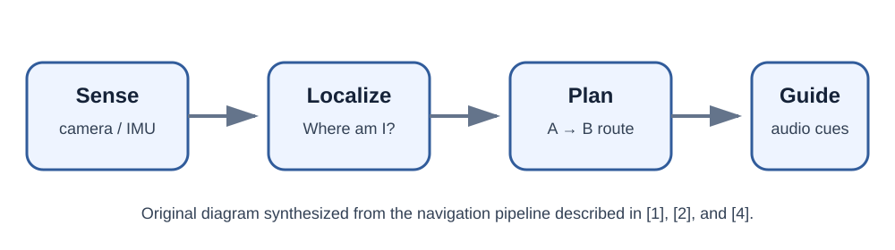

01 · Problem
Introduction & Problem Definition
Page summary0:00
Indoor navigation asks a deceptively simple question: if GPS is unreliable inside a building, how can a mobile system determine where a person is, choose a route, and guide them from their current point A to destination B?

Why indoor navigation is different
Outdoor navigation can rely heavily on satellite positioning and established road maps. Indoors, satellite signals are often unavailable or unreliable, so a navigation system needs another way to estimate position and direction. Vision-based systems use images or video from cameras to recognize places, landmarks, markers, or geometric features. A complete navigation system then connects localization to a map, a path planner, and user guidance. Khan et al. describe tracking/localization and planning as core parts of vision-based indoor navigation. [1]
Why accessibility matters
For people who are blind or have low vision, the problem is not only knowing a coordinate. A useful system must help identify destinations and support safe, understandable movement through unfamiliar indoor spaces. The review by Plikynas et al. emphasizes needs such as indoor orientation, obstacle awareness, and recognizing destinations including rooms, stairs, and elevators. [2]
Question 1: Where am I?
Localization estimates the user's position and often orientation.
Question 2: How do I reach B?
Path planning selects a usable route through a mapped indoor network.
Question 3: What should I do now?
Guidance converts the route into step-by-step instructions.
Two focal approaches in this tutorial
To keep the tutorial concrete, we focus on two recent approaches. Liu and Zhang (2023) use QR-code control points plus IMU fusion and an indoor road network. [3] UNav, technically described by Yang et al. (2022) and evaluated with blind/low-vision users in 2024, uses ordinary RGB images, visual place recognition, pose estimation, a mapped environment, and shortest-path planning without installing navigation markers throughout the building. [4] [5]